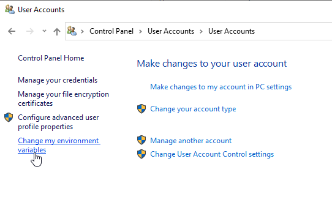
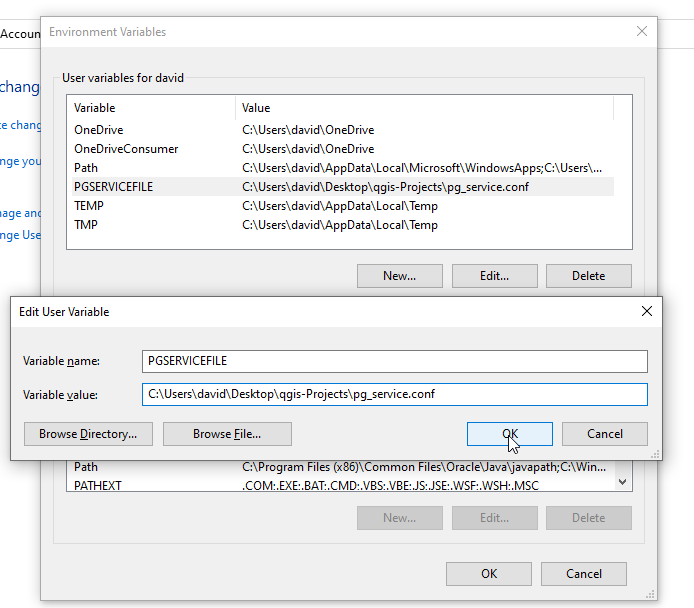

pg_service.conf¶
Table of Contents
Why Use It?¶
The pg_service.conf file allows you to connect your QGIS project using only a Service Name, so your password is not stored (even in in encrypted format) in your QGIS document.
This is particulary important with QGIS as a misconfigured qgis_mapserver or Apache/NGINX can cause the .qgis file to be downloaded rather than rendered in the browser.
Create File on Server¶
1. Create the pg_service.conf file under the /etc/postgresql-common directory


2. The contents of the file should be as below. Make sure to substitute your geouser password for the password show below

Test File on Server¶
It’s a good idea to test your file.
To do, su to user postgres:
root@suite:~# su - postgres
Issue psql service=geosuiteb:
postgres@suite:~$ psql service=geosuitedb
psql (15.3 (Ubuntu 15.3-1.pgdg22.04+1))
SSL connection (protocol: TLSv1.3, cipher: TLS_AES_256_GCM_SHA384, compression: off)
Type "help" for help.
geodb=>
You have now verified the pg_service.conf file is working correctly.
Create File on Desktop¶
1. Copy the pg_service.conf file you created above to your desktop and note the location
2. Change the host to the hostname (or IP) of your GeoSuite server
So, for example, if your GeoSuite is running on IP 1.2.3.4, your file would look as below:
[geosuitedb]
host=1.2.3.4
port=5432
dbname=geodb
user=geouser
password=Tristan1902
Register File¶
To registet the file, on Windows:
1. Go to Control Panel and click on User Acccounts

2. Click the User Acccounts link

3. On the left menu, click “Change my environmental variables”

4. In the Environmental Variables box click new. In the New User Variable box enter PGSERVICEFILE for Variable name and the location you saved the pg_service.conf file above as Variable value. Click OK

You have now registered your pg_service.conf file.
Test File on Desktop¶
To test our pg_service.conf file on our desktop, start QGIS.
1. On the left menu, click PostGIS and then right click “Add New Connection”

2. In the Create New PostGIS Connection box, give your connection and name enter your service name

3. Click the Test Connection button. You should see a success message at top as show below

Congradualtions, you have successfully create a pg_service.conf file on your server and desktop